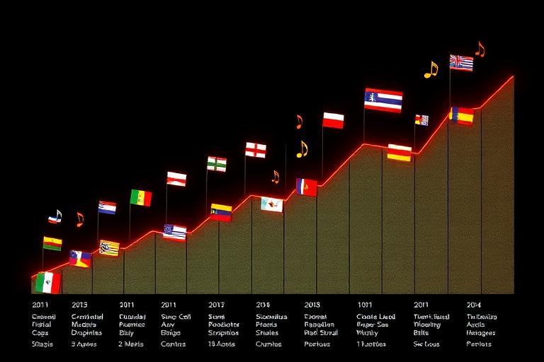

Reading the music world
Charts & World Pulse
RockMundo tracks music performance through multiple chart and ranking views rather than one universal leaderboard. Streams, sales, geography, time period and other audience signals can tell different stories, while World Pulse provides a wider view of what is moving across the game world.

In brief
Use charts to understand where a release is performing well, then compare that with streams, sales, promotion, live activity and regional fan growth. World Pulse is useful for spotting broader momentum and context rather than treating one chart rank as the whole career.
Different charts answer different questions
Combined charts
Bring more than one form of music consumption together to show wider commercial impact.
Format charts
Streaming, digital and physical formats can each reveal different audience behaviour.
Country charts
Regional performance can show where an artist's audience is strongest or beginning to grow.
Time-period charts
Daily, weekly and longer views separate short bursts from more sustained success.
What World Pulse adds
World Pulse aggregates activity so players can see what the wider world is responding to. It is useful for identifying momentum, comparing periods and understanding that your release exists inside a living economy rather than in isolation.
A strong pulse does not guarantee a specific chart result, and a quiet day does not mean a release is permanently weak. Think of it as context around the underlying streams, sales and audience activity.
How to read a result
- Start with the metric. Identify whether you are looking at streams, sales, combined performance or another ranking.
- Check geography. A release can be strong in one country before it is strong globally.
- Check the period. A daily spike and a sustained weekly position mean different things.
- Compare career activity. Look at gigs, promotion, releases and fan movement around the same period.
- Watch direction, not only rank. Improving from a low position can be more informative than holding a high rank after a major launch.
Streams and record sales are not interchangeable



A release can have a very different profile across formats. That is why the Compendium recommends looking at streams and each sales format separately when diagnosing performance.
What should I do with chart information?
- Use strong regional performance to inform future gig and promotion choices.
- Compare format demand before committing heavily to another production run.
- Do not abandon a release solely because its first chart day is weak.
- Look for sustained movement after media coverage, tour dates or social activity.
- Use rankings as feedback, not as a replacement for building the underlying career.